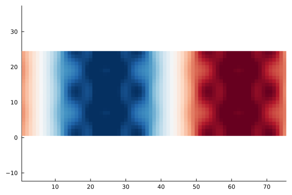

Analysing SCF convergence


The goal of this example is to explain the differing convergence behaviour of SCF algorithms depending on the choice of the mixing. For this we look at the eigenpairs of the Jacobian governing the SCF convergence, that is
\[1 - α P^{-1} \varepsilon^\dagger \qquad \text{with} \qquad \varepsilon^\dagger = (1-\chi_0 K).\]
where $α$ is the damping $P^{-1}$ is the mixing preconditioner (e.g. KerkerMixing, LdosMixing) and $\varepsilon^\dagger$ is the dielectric operator.
We thus investigate the largest and smallest eigenvalues of $(P^{-1} \varepsilon^\dagger)$ and $\varepsilon^\dagger$. The ratio of largest to smallest eigenvalue of this operator is the condition number
\[\kappa = \frac{\lambda_\text{max}}{\lambda_\text{min}},\]
which can be related to the rate of convergence of the SCF. The smaller the condition number, the faster the convergence. For more details on SCF methods, see Self-consistent field methods.
For our investigation we consider a crude aluminium setup:
using ASEconvert
using DFTK
using LazyArtifacts
ase_Al = ase.build.bulk("Al"; cubic=true) * pytuple((4, 1, 1))
system_Al = attach_psp(pyconvert(AbstractSystem, ase_Al);
Al=artifact"pd_nc_sr_pbe_standard_0.4.1_upf/Al.upf")FlexibleSystem(Al₁₆, periodic = TTT):
bounding_box : [ 16.2 0 0;
0 4.05 0;
0 0 4.05]u"Å"
.---------------------------------------.
/| |
* | |
|Al Al Al Al |
| | |
| .--Al--------Al--------Al--------Al-----.
|/ Al Al Al Al /
Al--------Al--------Al--------Al--------*
and we discretise:
model_Al = model_LDA(system_Al; temperature=1e-3, symmetries=false)
basis_Al = PlaneWaveBasis(model_Al; Ecut=7, kgrid=[1, 1, 1]);On aluminium (a metal) already for moderate system sizes (like the 8 layers we consider here) the convergence without mixing / preconditioner is slow:
# Note: DFTK uses the self-adapting LdosMixing() by default, so to truly disable
# any preconditioning, we need to supply `mixing=SimpleMixing()` explicitly.
scfres_Al = self_consistent_field(basis_Al; tol=1e-12, mixing=SimpleMixing());n Energy log10(ΔE) log10(Δρ) Diag Δtime
--- --------------- --------- --------- ---- ------
1 -35.98068624370 -0.86 12.0 366ms
2 -35.74935660910 + -0.64 -1.32 1.0 86.3ms
3 +115.8109464886 + 2.18 0.03 16.0 343ms
4 -34.36514101615 2.18 -0.90 10.0 304ms
5 -33.78263272868 + -0.23 -0.86 5.0 154ms
6 -34.26015551767 -0.32 -0.92 5.0 164ms
7 -35.93776483640 0.22 -1.53 3.0 132ms
8 -35.98933761915 -1.29 -2.17 2.0 105ms
9 -35.98903612342 + -3.52 -2.13 3.0 129ms
10 -35.98696618074 + -2.68 -2.02 2.0 122ms
11 -35.98653842024 + -3.37 -2.14 2.0 138ms
12 -35.98880202686 -2.65 -2.39 1.0 92.0ms
13 -35.98937601694 -3.24 -2.59 1.0 91.6ms
14 -35.98956647578 -3.72 -2.72 2.0 98.1ms
15 -35.98565190292 + -2.41 -2.24 3.0 137ms
16 -35.95650490489 + -1.54 -1.80 5.0 168ms
17 -35.98925374109 -1.48 -2.66 4.0 166ms
18 -35.98975803869 -3.30 -3.33 2.0 108ms
19 -35.98941762512 + -3.47 -2.77 4.0 160ms
20 -35.98974311961 -3.49 -3.32 3.0 139ms
21 -35.98976288740 -4.70 -3.64 2.0 109ms
22 -35.98976628528 -5.47 -4.09 2.0 126ms
23 -35.98976666750 -6.42 -4.12 3.0 115ms
24 -35.98976673971 -7.14 -4.45 1.0 92.0ms
25 -35.98976669881 + -7.39 -4.23 3.0 140ms
26 -35.98976671751 -7.73 -4.56 2.0 122ms
27 -35.98976676947 -7.28 -4.88 2.0 108ms
28 -35.98976677593 -8.19 -5.02 3.0 128ms
29 -35.98976677474 + -8.93 -5.05 2.0 130ms
30 -35.98976678248 -8.11 -5.37 3.0 124ms
31 -35.98976677768 + -8.32 -5.13 3.0 138ms
32 -35.98976678440 -8.17 -5.77 4.0 133ms
33 -35.98976678450 -10.01 -6.19 2.0 126ms
34 -35.98976678450 -11.27 -6.34 3.0 114ms
35 -35.98976678452 -10.77 -6.55 1.0 91.1ms
36 -35.98976678452 -11.61 -6.77 2.0 126ms
37 -35.98976678452 -12.26 -6.88 2.0 105ms
38 -35.98976678452 + -11.41 -6.63 3.0 127ms
39 -35.98976678452 -11.29 -7.51 5.0 128ms
40 -35.98976678452 -13.37 -7.78 3.0 143ms
41 -35.98976678452 -14.15 -7.90 3.0 115ms
42 -35.98976678452 + -13.25 -7.61 3.0 131ms
43 -35.98976678452 -13.67 -7.62 4.0 142ms
44 -35.98976678452 -13.37 -8.28 3.0 125ms
45 -35.98976678452 -14.15 -8.46 2.0 141ms
46 -35.98976678452 + -13.85 -8.52 2.0 126ms
47 -35.98976678452 -13.85 -8.44 3.0 129ms
48 -35.98976678452 + -14.15 -8.77 2.0 100ms
49 -35.98976678452 + -Inf -9.02 3.0 125ms
50 -35.98976678452 -14.15 -9.07 2.0 127ms
51 -35.98976678452 + -13.85 -9.66 2.0 108ms
52 -35.98976678452 -13.85 -9.29 3.0 125ms
53 -35.98976678452 + -14.15 -10.29 2.0 118ms
54 -35.98976678452 -14.15 -9.64 4.0 181ms
55 -35.98976678452 + -13.85 -10.04 4.0 152ms
56 -35.98976678452 -14.15 -10.19 3.0 125ms
57 -35.98976678452 -14.15 -10.65 2.0 99.4ms
58 -35.98976678452 + -14.15 -10.51 3.0 137ms
59 -35.98976678452 -14.15 -10.70 2.0 110ms
60 -35.98976678452 + -Inf -11.04 2.0 110ms
61 -35.98976678452 + -Inf -11.44 2.0 110ms
62 -35.98976678452 + -13.85 -11.51 2.0 129ms
63 -35.98976678452 -13.85 -11.36 5.0 130ms
64 -35.98976678452 + -Inf -11.43 4.0 150ms
65 -35.98976678452 -13.85 -11.94 2.0 101ms
66 -35.98976678452 + -13.55 -12.44 4.0 135mswhile when using the Kerker preconditioner it is much faster:
scfres_Al = self_consistent_field(basis_Al; tol=1e-12, mixing=KerkerMixing());n Energy log10(ΔE) log10(Δρ) Diag Δtime
--- --------------- --------- --------- ---- ------
1 -35.98113583229 -0.86 16.0 365ms
2 -35.98701367125 -2.23 -1.34 1.0 104ms
3 -35.98628288071 + -3.14 -1.98 3.0 136ms
4 -35.98929577613 -2.52 -2.11 5.0 119ms
5 -35.98923404987 + -4.21 -2.39 4.0 110ms
6 -35.98960272734 -3.43 -2.77 2.0 98.6ms
7 -35.98975840934 -3.81 -2.92 8.0 167ms
8 -35.98976350977 -5.29 -3.50 1.0 93.5ms
9 -35.98975657731 + -5.16 -3.47 4.0 126ms
10 -35.98976643222 -5.01 -3.79 2.0 101ms
11 -35.98976649413 -7.21 -4.09 3.0 137ms
12 -35.98976677192 -6.56 -4.45 1.0 95.1ms
13 -35.98976671393 + -7.24 -4.44 8.0 171ms
14 -35.98976678374 -7.16 -5.08 2.0 101ms
15 -35.98976678401 -9.56 -5.42 4.0 144ms
16 -35.98976678441 -9.40 -5.66 3.0 135ms
17 -35.98976678450 -10.02 -5.97 2.0 101ms
18 -35.98976678452 -10.65 -6.50 2.0 105ms
19 -35.98976678452 -11.75 -6.87 9.0 183ms
20 -35.98976678452 -13.55 -6.97 2.0 113ms
21 -35.98976678452 -12.75 -7.52 1.0 94.5ms
22 -35.98976678452 -13.55 -7.62 3.0 137ms
23 -35.98976678452 + -14.15 -7.85 1.0 97.6ms
24 -35.98976678452 -14.15 -8.27 7.0 133ms
25 -35.98976678452 + -14.15 -8.29 3.0 137ms
26 -35.98976678452 -13.85 -8.70 1.0 94.8ms
27 -35.98976678452 + -13.85 -9.35 3.0 119ms
28 -35.98976678452 -13.85 -9.25 6.0 204ms
29 -35.98976678452 + -Inf -9.57 2.0 104ms
30 -35.98976678452 + -Inf -10.09 3.0 130ms
31 -35.98976678452 -13.85 -10.08 3.0 139ms
32 -35.98976678452 + -13.85 -10.46 2.0 103ms
33 -35.98976678452 + -Inf -10.91 7.0 140ms
34 -35.98976678452 + -14.15 -11.19 3.0 139ms
35 -35.98976678452 -14.15 -11.60 2.0 105ms
36 -35.98976678452 + -Inf -11.77 3.0 165ms
37 -35.98976678452 + -Inf -12.08 1.0 95.1msGiven this scfres_Al we construct functions representing $\varepsilon^\dagger$ and $P^{-1}$:
# Function, which applies P^{-1} for the case of KerkerMixing
Pinv_Kerker(δρ) = DFTK.mix_density(KerkerMixing(), basis_Al, δρ)
# Function which applies ε† = 1 - χ0 K
function epsilon(δρ)
δV = apply_kernel(basis_Al, δρ; ρ=scfres_Al.ρ)
χ0δV = apply_χ0(scfres_Al, δV)
δρ - χ0δV
endepsilon (generic function with 1 method)With these functions available we can now compute the desired eigenvalues. For simplicity we only consider the first few largest ones.
using KrylovKit
λ_Simple, X_Simple = eigsolve(epsilon, randn(size(scfres_Al.ρ)), 3, :LM;
tol=1e-3, eager=true, verbosity=2)
λ_Simple_max = maximum(real.(λ_Simple))44.38745213382736The smallest eigenvalue is a bit more tricky to obtain, so we will just assume
λ_Simple_min = 0.9520.952This makes the condition number around 30:
cond_Simple = λ_Simple_max / λ_Simple_min46.625474930490924This does not sound large compared to the condition numbers you might know from linear systems.
However, this is sufficient to cause a notable slowdown, which would be even more pronounced if we did not use Anderson, since we also would need to drastically reduce the damping (try it!).
Having computed the eigenvalues of the dielectric matrix we can now also look at the eigenmodes, which are responsible for the bad convergence behaviour. The largest eigenmode for example:
using Statistics
using Plots
mode_xy = mean(real.(X_Simple[1]), dims=3)[:, :, 1, 1] # Average along z axis
heatmap(mode_xy', c=:RdBu_11, aspect_ratio=1, grid=false,
legend=false, clim=(-0.006, 0.006))
This mode can be physically interpreted as the reason why this SCF converges slowly. For example in this case it displays a displacement of electron density from the centre to the extremal parts of the unit cell. This phenomenon is called charge-sloshing.
We repeat the exercise for the Kerker-preconditioned dielectric operator:
λ_Kerker, X_Kerker = eigsolve(Pinv_Kerker ∘ epsilon,
randn(size(scfres_Al.ρ)), 3, :LM;
tol=1e-3, eager=true, verbosity=2)
mode_xy = mean(real.(X_Kerker[1]), dims=3)[:, :, 1, 1] # Average along z axis
heatmap(mode_xy', c=:RdBu_11, aspect_ratio=1, grid=false,
legend=false, clim=(-0.006, 0.006))Clearly the charge-sloshing mode is no longer dominating.
The largest eigenvalue is now
maximum(real.(λ_Kerker))4.685459842575243Since the smallest eigenvalue in this case remains of similar size (it is now around 0.8), this implies that the conditioning improves noticeably when KerkerMixing is used.
Note: Since LdosMixing requires solving a linear system at each application of $P^{-1}$, determining the eigenvalues of $P^{-1} \varepsilon^\dagger$ is slightly more expensive and thus not shown. The results are similar to KerkerMixing, however.
We could repeat the exercise for an insulating system (e.g. a Helium chain). In this case you would notice that the condition number without mixing is actually smaller than the condition number with Kerker mixing. In other words employing Kerker mixing makes the convergence worse. A closer investigation of the eigenvalues shows that Kerker mixing reduces the smallest eigenvalue of the dielectric operator this time, while keeping the largest value unchanged. Overall the conditioning thus workens.
Takeaways:
- For metals the conditioning of the dielectric matrix increases steeply with system size.
- The Kerker preconditioner tames this and makes SCFs on large metallic systems feasible by keeping the condition number of order 1.
- For insulating systems the best approach is to not use any mixing.
- The ideal mixing strongly depends on the dielectric properties of system which is studied (metal versus insulator versus semiconductor).